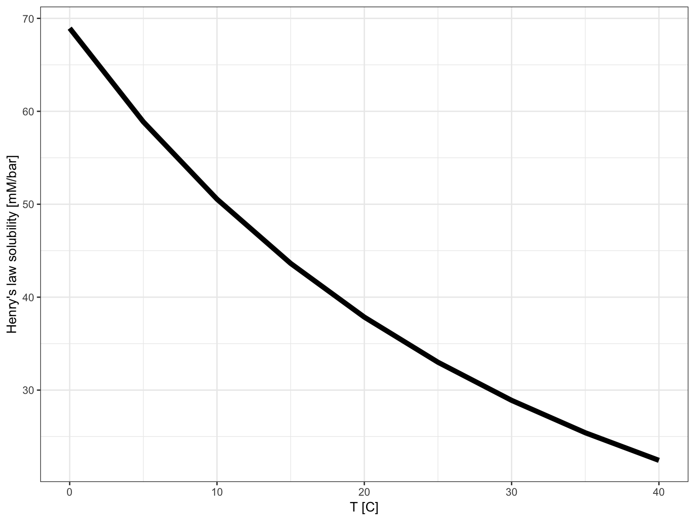

Carbonate Chemistry Examples
2018-12-05
Source:vignettes/carbonate_chemistry.Rmd
carbonate_chemistry.RmdThis vignette provides examples of the carbonate chemistry tools implemented by the mediatools package to explore carbonate solubility and pH control in open and closed media systems. See the carbonate chemistry equations vignette for conceptual background.
CO2 solubility
solubilities <- data_frame(
temperature = seq(from = 0, to = 40, by = 5) %>% qty("C"),
solubility = calculate_solubility("CO2", temperature)
)
ggplot(solubilities) +
aes(get_qty_value(temperature, "C"), solubility) +
geom_line(size = 2) +
labs(
x = "T [C]",
y = get_qty_units_with_label(solubilities$solubility, "Henry's law solubility")) +
theme_bw()
Speciation
# calculate
df_speciation <-
data_frame(
pH = seq(3, 14, by = 0.1),
DIC = qty(10, "mM"),
`H2CO3*` = calculate_carbonic_acid(pH, DIC = DIC, temp = temperature) %>%
get_qty_value("mM"),
HCO3 = calculate_bicarbonate(pH, DIC = DIC, temp = temperature) %>%
get_qty_value("mM"),
CO3 = calculate_carbonate(pH, DIC = DIC, temp = temperature) %>%
get_qty_value("mM")
)
# visualize
df_speciation %>%
mutate(DIC = DIC %>% get_qty_value("mM")) %>%
gather(Species, Concentration, -pH, -DIC) %>%
ggplot() +
aes(pH, Concentration, color = Species) +
geom_line() +
scale_x_continuous(expand = c(0, 0), breaks = c(1:14)) +
scale_y_log10(
breaks = 10^(-3:1),
labels = function(x) map(x, qty, "mM") %>% map_chr(get_qty_text)) +
coord_cartesian(ylim = c(10^-3, 10)) +
theme_bw()
Open system
CO2 only
# range of pCO2s
pCO2s <- data_frame(pCO2 = c(seq(0, 5, by=0.1), seq(5, 20, by=1), seq(20, 200, by=5)) %>% qty("mbar"))
# range of temperature
temperatures <- data_frame(temperature = c(10, 25, 37) %>% qty("C"))
# calculate for all combinations
df_pH_vs_pCO2 <-
crossing(pCO2s, temperatures) %>%
mutate(
pH = calculate_open_system_pH(pCO2, temp = temperature),
`DIC [mM]` = calculate_DIC(pH, pCO2, temp = temperature) %>%
get_qty_value("mM"),
`CO2 [mM]` = calculate_ideal_gas_molarity(pCO2, temp = temperature) %>%
get_qty_value("mM")
)df_pH_vs_pCO2 %>%
gather(var, val, pH, `DIC [mM]`, `CO2 [mM]`) %>%
filter(!(var == "pH" & val > 5.5)) %>%
ggplot() +
aes(pCO2, val, color = get_qty_text(temperature, "C")) +
geom_line() +
scale_x_continuous("pCO2", expand = c(0,0), labels = function(x) str_c(x, "mbar\n", x/10, "% at SP")) +
scale_color_brewer("Temperature", palette = "Set1") +
facet_grid(var~., scales = "free_y") +
expand_limits(x = 0) +
theme_bw() + labs(y = "")
Adjusting pH with alkalinity
# to calculate how much base (NaOH or NaHCO3) to add
calculate_open_system_alkalinity(pH = 6.8, pCO2 = qty(0.4, "mbar"))
#> Molarity [µM]
#> [1] 41.67307
calculate_open_system_alkalinity(pH = 6.8, pCO2 = qty(50, "mbar"))
#> Molarity [mM]
#> [1] 5.220963
calculate_open_system_alkalinity(pH = 6.8, pCO2 = qty(200, "mbar"))
#> Molarity [mM]
#> [1] 20.88414
# to calculate pH with addition of a specific amount of base
calculate_open_system_pH(pCO2 = qty(0.4, "mbar"), alkalinity = qty(5, "mM"))
#> [1] 8.848121
calculate_open_system_pH(pCO2 = qty(50, "mbar"), alkalinity = qty(5, "mM"))
#> [1] 6.781229
calculate_open_system_pH(pCO2 = qty(200, "mbar"), alkalinity = qty(5, "mM"))
#> [1] 6.179416
# to calculate pH with addition of a specific amount of acid
calculate_open_system_pH(pCO2 = qty(0.4, "mbar"), alkalinity = qty(-1, "mM"))
#> [1] 2.999983
calculate_open_system_pH(pCO2 = qty(50, "mbar"), alkalinity = qty(-1, "mM"))
#> [1] 2.999666
calculate_open_system_pH(pCO2 = qty(200, "mbar"), alkalinity = qty(-1, "mM"))
#> [1] 2.99856Visualization
# range of pCO2s
pCO2s <- data_frame(pCO2 = c(0.4, 50, 200) %>% qty("mbar"))
# range of temperature
temperatures <- data_frame(temperature = c(25, 37) %>% qty("C"))
# calculate for all combinations
df_base_vs_pH <-
crossing(pCO2s, temperatures, pH = seq(3, 7.5, by = 0.05)) %>%
mutate(
ions = calculate_open_system_alkalinity(pH, pCO2, temp = temperature),
`Add base (e.g. NaOH) [mM]` = ifelse(ions > 0, get_qty_value(ions, "mM"), 0),
`Add acid (e.g. HCl) [mM]` = ifelse(ions < 0, -get_qty_value(ions, "mM"), 0),
`DIC [mM]` = calculate_DIC(pH, pCO2, temp = temperature) %>%
get_qty_value("mM")
)
p <- df_base_vs_pH %>%
gather(var, val, `Add base (e.g. NaOH) [mM]`, `Add acid (e.g. HCl) [mM]`, `DIC [mM]`) %>%
mutate(panel = get_qty_text(pCO2, "mbar") %>% paste("CO2") %>% as_factor()) %>%
filter(val > 0) %>%
ggplot() +
aes(pH, val, color = var, linetype = get_qty_text(temperature, "C")) +
geom_vline(xintercept = 7, color = "black", size = 1) +
geom_line() +
scale_x_continuous(breaks = 1:14, expand = c(0, 0)) +
scale_color_brewer("Component", palette = "Set1") +
facet_wrap(~panel, nrow = 1, scales = "free_y") +
theme_bw() +
labs(y = "Concentration [mM]", linetype = "Temperature")
p

Adjusting pH with a buffer
For simplicty keeping temperature constant at the default (25C).
buffer <- qty(c(1, 10, 50), "mM")
# to calculate how much base (NaOH or NaHCO3) to add
df <- data_frame(
buffer = buffer,
add = calculate_open_system_alkalinity(
pH = 6.8,
pCO2 = qty(50, "mbar"),
buffer = buffer,
buffer_pKa = 7.5
)
)
df
#> # A tibble: 3 x 2
#> buffer add
#> <mM> <mM>
#> 1 1 5.387300
#> 2 10 6.884338
#> 3 50 13.537839
# what if buffer is mono-sodium? (negative means HCl or other strong acid required instead of base)
df %>% mutate(add_if_salt_buffer = add - buffer)
#> # A tibble: 3 x 3
#> buffer add add_if_salt_buffer
#> <mM> <mM> <mM>
#> 1 1 5.387300 4.387300
#> 2 10 6.884338 -3.115662
#> 3 50 13.537839 -36.462161
# to calculate pH with addition of a specific buffer
df %>%
mutate(
pH = calculate_open_system_pH(
pCO2 = qty(50, "mbar"),
buffer = buffer,
alkalinity = add,
buffer_pKa = 7.5
)
)
#> # A tibble: 3 x 3
#> buffer add pH
#> <mM> <mM> <dbl>
#> 1 1 5.387300 6.80
#> 2 10 6.884338 6.80
#> 3 50 13.537839 6.80Different concentrations of weak acid (same pKa)
# range of pCO2s
pCO2s <- data_frame(pCO2 = c(0.4, 50, 200) %>% qty("mbar"))
# range of buffers
buffers <- data_frame(
buffer = c(0, 20, 20, 20, 50) %>% qty("mM"),
buffer_pKa = c(7.5, 7.5, 9, 6, 7.5))
# calculate for all combinations
df_base_w_buffer_vs_pH <-
crossing(pCO2s, buffers, pH = seq(3, 7.5, by = 0.05)) %>%
mutate(
ions = calculate_open_system_alkalinity(pH, pCO2, buffer = buffer, buffer_pKa = buffer_pKa),
`Add base (e.g. NaOH) [mM]` = ifelse(ions > 0, get_qty_value(ions, "mM"), 0),
`Add acid (e.g. HCl) [mM]` = ifelse(ions < 0, -get_qty_value(ions, "mM"), 0),
`DIC [mM]` = calculate_DIC(pH, pCO2) %>% get_qty_value("mM")
)
# visualize
plot_df <- df_base_w_buffer_vs_pH %>%
gather(var, val, `Add base (e.g. NaOH) [mM]`, `Add acid (e.g. HCl) [mM]`, `DIC [mM]`) %>%
mutate(panel = get_qty_text(pCO2, "mbar") %>% paste("CO2") %>% as_factor(),
Buffer = get_qty_text(buffer, "mM") %>% paste0(" (pKa=", buffer_pKa, ")")) %>%
filter(val > 0)
p_log %+% filter(plot_df, buffer_pKa == 7.5) %+%
aes(linetype = Buffer) +
labs(title = "Different concentrations of a weak acid buffer")
Same concentration of weak acid (different pKa)
p_log %+% filter(plot_df, buffer == qty(20, "mM")) %+%
aes(linetype = Buffer) +
labs(title = "Same concentration of a weak acid buffer with different pKa")
Different concentration of salt buffer (same pKa)
If the buffer is a salt instead of an acid, it contributes to the alkalinity.
plot_df2 <-
crossing(pCO2s, buffers, pH = seq(3, 7.5, by = 0.05)) %>%
mutate(
ions = calculate_open_system_alkalinity(pH, pCO2, buffer = buffer, buffer_pKa = buffer_pKa) - buffer,
`Add base (e.g. NaOH) [mM]` = ifelse(ions > 0, get_qty_value(ions, "mM"), 0),
`Add acid (e.g. HCl) [mM]` = ifelse(ions < 0, -get_qty_value(ions, "mM"), 0),
`DIC [mM]` = calculate_DIC(pH, pCO2) %>% get_qty_value("mM")
) %>%
gather(var, val, `Add base (e.g. NaOH) [mM]`, `Add acid (e.g. HCl) [mM]`, `DIC [mM]`) %>%
mutate(panel = get_qty_text(pCO2, "mbar") %>% paste("CO2") %>% as_factor(),
Buffer = get_qty_text(buffer, "mM") %>% paste0(" (pKa=", buffer_pKa, ")")) %>%
filter(val > 0)
p_log %+% filter(plot_df2, buffer_pKa == 7.5) %+%
aes(linetype = Buffer) +
labs(title = "Different concentrations of a mono-valent salt buffer")
pH difference upon atmosphere switching
A rare environmental but common laboratory scenario is the sometimes unexpected change in pH upon shifting from standard atmospheric CO2 (400ppm, let’s face reality…) to some artifical higher CO2 atmosphere without adjusting anything else.
df_pH_switch <-
df_base_w_buffer_vs_pH %>%
filter(pCO2 == qty(0.4, "mbar")) %>%
rename(init_pCO2 = pCO2) %>%
crossing(data_frame(pCO2 = qty(c(50, 200), "mbar"))) %>%
mutate(
`new pH` = calculate_open_system_pH(
pCO2 = pCO2, buffer = buffer, buffer_pKa = buffer_pKa, alkalinity = ions
),
`pH difference` = `new pH` - pH,
panel = get_qty_text(pCO2, "mbar") %>% paste("CO2") %>% as_factor()
) %>%
gather(var, val, `new pH`, `pH difference`)
p %+% df_pH_switch %+%
aes(color = get_qty_text(buffer, "mM"), linetype = factor(buffer_pKa)) +
facet_grid(var~panel, scales = "free_y") +
scale_color_brewer("Buffer", palette = "Set1") +
scale_linetype_manual(values = c(2, 1, 3)) +
labs(linetype = "pKa", y = "")
#> Scale for 'colour' is already present. Adding another scale for
#> 'colour', which will replace the existing scale.